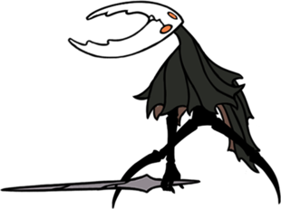

The Hollow Knight
The titular character of Hollow Knight is only seen three times throughout the game, as of the Grimm Troupe release, as the update gave us one more view on the relationship between the Pale King and the Hollow Knight.
One of the final bosses of the game is the Hollow Knight, believed to be an adult sibling to the Knight, or rather, a vessel that was allowed to grow up before they were trapped away.
The Hollow Knight was found to be the purest of the vessels and was brought up to contain the infection. Unfortunately either the infection was not something to be contained or the Hollow Knight was not truly hollow. Either is a distinct possibility.
Since one of the endings is entitled "Sealed Siblings" it is believed the the Hollow Knight is a sibling to both the Knight and Hornet.
My Thoughts:
The Hollow Knight seems like an adversary at first, I will admit that. But the more you know of their story and adversity the worse you feel.
What was the relationship between the Pale King and the Hollow Knight? Due to a scene that shows after you complete the path of pain, it seems as if the Hollow Knight and the Pale King had a familial relationship. This is further supported by the acolytes bowing to Ghost as they pass, indicating that the vessels, for the short time they were at the palace anyway, were treated as royalty.
This revelation kinda breaks my heart more than normal anyways, as it paints the Pale King somewhat more sympathetically (ugh), but it also places the Hollow Knight in a King's child, beloved by all situation. They were a symbol of hope and the kingdom was likely to get very attached, which shows in the statue in City of Tears. It adds a whole layer of sadness I'm both fond of and not.